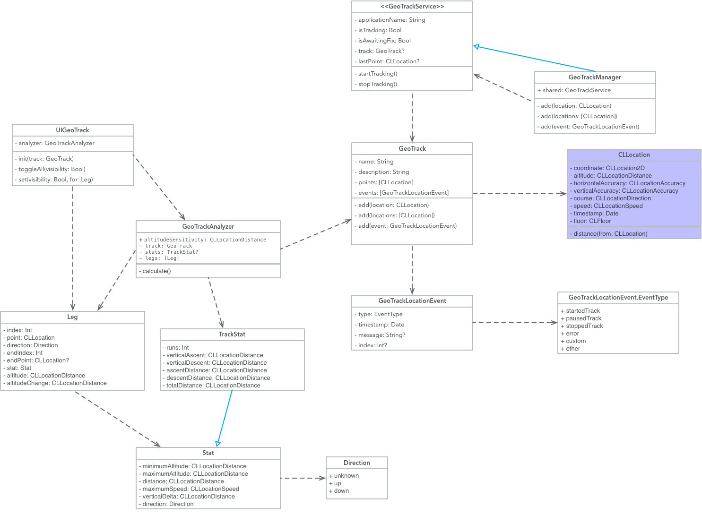

View on GitHub
View on GitHub GeoTrackKit Reference
GeoTrackKit Reference
GeoTrackKit
An iOS Library for Geo Tracking
Features
- Handles user authorization
- Handles track creation
- Handles track analyzing (for ascents, descents and other stats)
- Custom MKMapKit control for plotting your tracks on a map
- Example App to demonstrate capabilities
Project Status
This project is currently a work in progress.


Initial Roadmap
- [ ] Carthage Support
- [x] CocoaPods Support
- [x] Continuous Integration (Buddy Build)
- [x] Function Documentation
- [x] Jazzy Docs
- [ ] Performance Tests
- [x] SwiftLint Integration
- [ ] 90% Code Coverage
Installation
Installation Instructions
CocoaPods
Directly from Github:
pod 'GeoTrackKit', :git => 'git@github.com:intere/GeoTrackKit.git', :branch => 'develop'
Directly from Cocoapods:
pod 'GeoTrackKit', '0.2.0'
Example Usage
// This will either start tracking, or prompt the user for access to track their location
GeoTrackManager.shared.startTracking()

This library also includes a map control that will map the GeoTrack:

Inspiration
I’ve built a couple of variations of Geo Tracking applications, but I wanted to build a library for the community that I can share and get feedback and build a better product.
Created and maintained by
Key Classes

Documentation
See the generated documentation in the docs folder